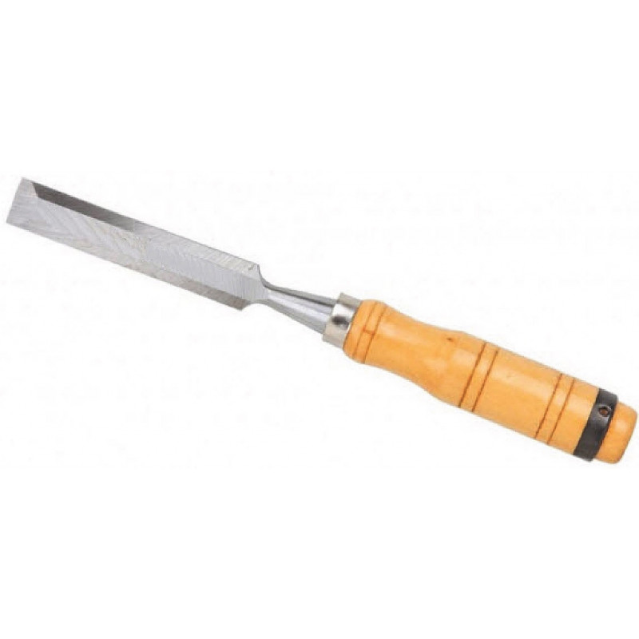
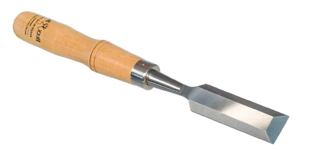
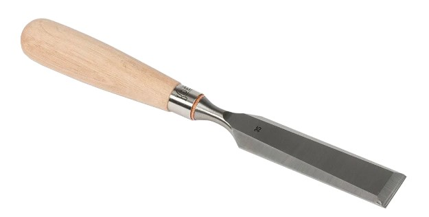
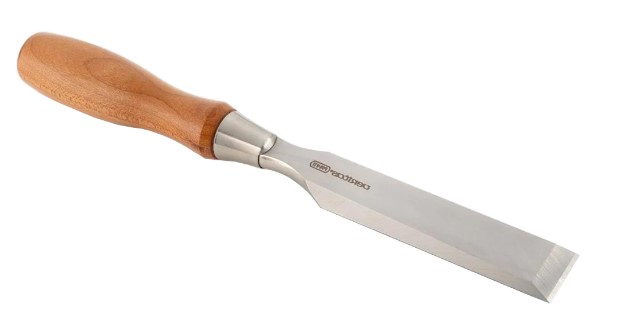
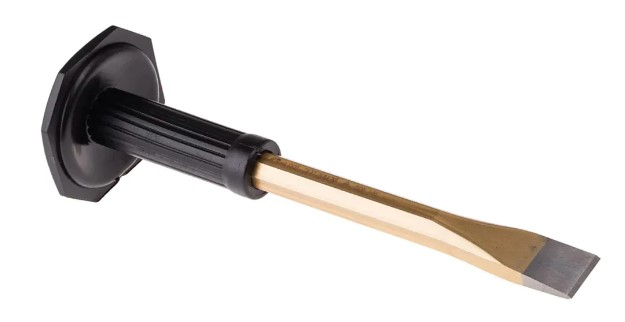
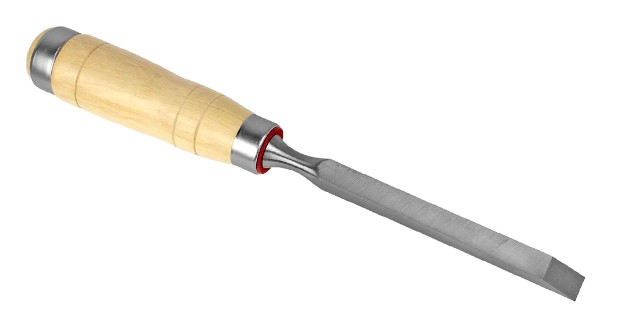
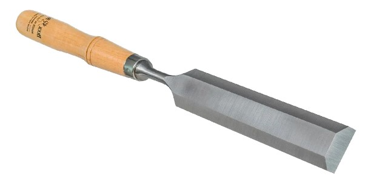

 สิ่ว คือ เครื่องมือช่าง ใช้สำหรับงานไม้ ซึ่งคำว่า “สิ่ว”
เชื่อกันว่ามาจากคำภาษาละติน “seco” แปลว่า “ฉันตัด” สิ่วทำมาจากโลหะ มีลักษณะรูปร่างหลากหลายแบบ เช่น สิ่วปากบาง สิ่วปากหนา ใช้งานร่วมกับค้อน โดยการตอกที่ด้ามสิ่วเพื่อส่งแรงไปที่ปลาย
ใช้ในงานขุดเซาะร่อง ตกแต่งไม้ในการเข้าเดือย ติดบานพับ สายยู ลิ้นชักตู้ หรือโต๊ะ สิ่วมีตั้งแต่เครื่องมือ ขนาดเล็กที่สามารถใช้ทำงานรายละเอียดเล็กๆ ไปจนถึงเครื่องมือขนาดใหญ่ที่ใช้ในการขจัดส่วนของไม้และหิน
ในงานแกะสลักไม้
ประเภทของสิ่ว
วิธีการใช้สิ่ว
วิธีบำรุงรักษาสิ่ว
ประเภทของสิ่ว
สิ่วใบหนา (Firmer Chisel)
สิ่วประเภทนี้มีใบมีดที่หนาและแข็งแรงซึ่งช่วยให้สามารถถอดชิ้นไม้ขนาดใหญ่ได้ มีความแข็งแรงเพียงพอที่จะสร้างรอยต่อที่ลึกและใหญ่เมื่อปลายถูกตีด้วยตะลุมพุก สิ่วชนิดนี้มีมุมเอียงและเป็นทางเลือกที่ดีสำหรับโครงการงานไม้ทั่วไป
รูปแบบหนึ่งของสิ่วที่มีความกระชับเรียกว่าสิ่วที่มีขอบนูนหรือที่สกัดด้วยสิ่วที่มีมุมทั้งสองด้านของพื้นผิวการตัดเพื่อการตัดที่แม่นยำยิ่งขึ้น

สิ่วลบเหลี่ยม (Bevel Edge Chisel)
สิ่วลบเหลี่ยมนี้เป็นเครื่องมือที่ใช้กันทั่วไปในอุตสาหกรรมช่างไม้ ตามชื่อที่ระบุ พวกเขามีด้านเอียง และขอบตรง ซึ่งช่วยให้เข้าถึงข้อต่อประกบได้สูงสุด สิ่วขอบเอียงบางตัวมีห่วงเพื่อป้องกันการแตก และเสริมความแข็งแรงของด้ามจับ
อย่างไรก็ตาม ไม่จำเป็นอย่างยิ่ง

สิ่วงานไม้ (Bench Chisel)
สิ่วชุดนี้สามารถรับแรงตอกจากค้อนเพื่อทำงานหนักๆได้ ตัวเหล็กสิ่วจะเป็นรูปแบบ Premium Chisel ซึ่งขอบข้างจะบางมาก เหมาะกับการใช้งานทั่วไป หรือกับงานละเอียดอย่างการเก็บขอบเดือยหางเหยี่ยว หรือชิ้นส่วนของ
Joinery ที่มีขนาดเล็กด้วยการใช้มือดัน

สิ่วก่ออิฐ (Masonry Chisel)
สิ่วก่ออิฐใช้ในการก่ออิฐ โดยการเคาะใบมีดเบาๆไปบนพื้นผิวอิฐหรือหิน สิ่วเหล่านี้ออกแบบมาเพื่อใช้กับอิฐ และบล็อกคอนกรีต ด้วยฟันที่จัดไว้ พวกเขายังสามารถทำงานได้ดีกับหินอ่อนอีกด้วย

สิ่วหน้าแคบ (Mortise Chisel)
ตรงส่วนปลายด้่ามจะมีห่วงเหล็กรัด เพื่อช่วยไม่ให้ปลายด้ามแตกเวลาตอกด้วยค้อนแรงๆทำให้สิ่วชุดนี้สามารถรับแรงกระแทกเพื่อทำงานหนักๆได้ ตัวเหล็กสิ่วจะเป็นรูปแบบ Mortise Chisel ซึ่งใช้ในการเจาะเดือยตัวเมีย หรือร่องเดือย Mortise
โดยขอบข้างของเหล็กจะถูกตัดแต่งมาเรียบและเอียงขึ้นขอบด้านข้าง เพื่อให้เวลาใช้สิ่วชุดนี้เจาะเดือย จะได้ผนังที่มีขนาดเท่ากับความกว้างของสิ่ว และเรียบตลอดแนวโดยไม่ต้องเก็บงานขอบข้างซ้ำซ้อ

สิ่วปากบาง (Paring Chisel)
สิ่วปากบาง เป็นเครื่องมือตัดแต่งไม้ชนิดหนึ่งที่ออกแบบใบสิ่ว ให้มีความคมมากกว่าสิ่วเจาะ มุมของใบสิ่ว 25-30 องศา เหมาะสำหรับเจาะ เฉือน แต่งระดับผิวไม้ให้เรียบ

Back to top
วิธีการใช้สิ่ว
• การใช้สิ่วทุกชนิดในการทำงาน จะต้องจับด้ามสิ่วให้กระชับและตรงกับรอยที่ต้องการเจาะหรือตกแต่ง
• การตอกสิ่วเพื่อเจาะชิ้นงาน ควรให้สิ่วกินเนื้อไม้แต่เพียงเล็กน้อยจนครอบคลุมร่องที่จะเจาะแล้วจึงทำการเจาะ ทั้งนี้การเจาะแต่ละครั้งไม่ควรเจาะให้ลึกทีเดียว เพราะจะทำเกิดอันตรายได้
• การใช้สิ่วปากบางตกแต่งชิ้นงานต้องแน่ใจว่าชิ้นงานที่จะปฏิบัติปราศจากเศษโลหะหรือตะปูซึ่งจะทำให้ปากสิ่วบิ่นหรือหักได้ และอาจทำให้เกิดอันตราย
• ไม่ควรนำสิ่วไปใช้งานผิดประเภท เพราะอาจทำให้สิ่วเสียหายได้ การจัดเก็บและบำรุงรักษา
• ตรวจสอบตรวจซ่อมสิ่วให้มีสภาพการใช้งานได้อย่างมีประสิทธิภาพ
• ทำความสะอาดหลังการใช้งานทุกครั้ง
• ก่อนนำไปเก็บให้ชโลมนำมันเครื่องใสทุกครั้ง
Back to top
วิธีบำรุงรักษาสิ่ว
• อย่าใช้สิ่วตัด หรือสกัดสิ่งอื่นใดนอกจากไม้
• อย่าใช้สิ่วในการอื่น เช่น งัดหรือตอก ใช้แทนไขควง ใช้ขูดสี ใช้งัดเปิดกระป๋องสี
• อย่าใช้สิ่วที่มีด้ามบาน ถ้าเป็นเช่นนั้นแล้วควรทำการแก้ไขอุปกรณ์ช่าง โดยขัดด้วยตะไบหรือลับ
• อย่าเจียรสิ่วเพื่อปรับแต่ง ให้เปลี่ยนมาใช้หินลับแทน
• เก็บปลายสิ่วด้วยปลอกพลาสติก หรือ ม้วนใส่กับผ้า แล้วเก็บไว้ในที่ที่ปลอดภัย
• ลับคมสิ่วให้คมอยู่เสมอ ตามมุมคมของใบสิ่ว 20 – 30 องศา การลับคมสิ่ว ให้ล้บด้วยหินที่ใช้กับสิ่วโดยเฉพาะ
• ทำความสะอาดสิ่ว ให้ชโลมน้ำมันเครื่องชนิดใส ก่อนนำไปจัดเก็บในแผงเครื่องมือ
Back to top
แหล่งที่มา : https://northpower.co.th/pages/%E0%B8%AA%E0%B8%B4%E0%B9%88%E0%B8%A7%E0%B8%84%E0%B8%B7%E0%B8%AD%E0%B8%AD%E0%B8%B0%E0%B9%84%E0%B8%A3-%E0%B9%81%E0%B8%A5%E0%B8%B0%E0%B8%A1%E0%B8%B5%E0%B8%81%E0%B8%B5%E0%B9%88%E0%B9%81%E0%B8%9A%E0%B8%9A%E0%B9%83%E0%B8%AB%E0%B9%89%E0%B9%80%E0%B8%A3%E0%B8%B2%E0%B9%80%E0%B8%A5%E0%B8%B7%E0%B8%AD%E0%B8%81
แหล่งที่มา : https://www.kasempongratonline.com/single-post/2016/12/8-%E0%B8%AA-%E0%B8%A7%E0%B8%97-%E0%B9%83%E0%B8%84%E0%B8%A3%E0%B9%86%E0%B9%80%E0%B8%84-%E0%B8%B2%E0%B9%80%E0%B8%A3-%E0%B8%A2%E0%B8%81%E0%B8%81-%E0%B8%99-%E0%B8%A1-%E0%B8%99%E0%B8%84-%E0%B8%AD%E0%B8%AD%E0%B8%B0%E0%B9%84%E0%B8%A3-chisels
แหล่งที่มา : https://www.kachathailand.com/articles/%E0%B8%AA%E0%B8%B4%E0%B9%88%E0%B8%A7-%E0%B8%A1%E0%B8%B5%E0%B8%81%E0%B8%B5%E0%B9%88%E0%B8%9B%E0%B8%A3%E0%B8%B0%E0%B9%80%E0%B8%A0%E0%B8%97-%E0%B9%83%E0%B8%8A%E0%B9%89%E0%B8%87%E0%B8%B2%E0%B8%99%E0%B9%81/